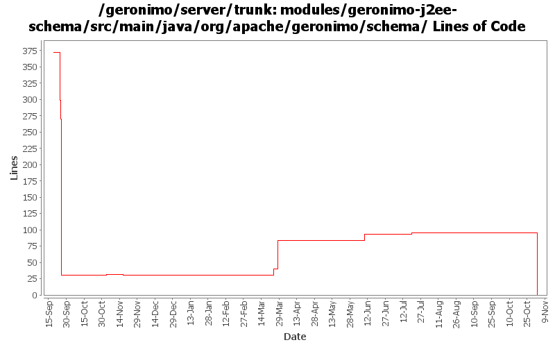

[root]/modules/geronimo-j2ee-schema/src/main/java/org/apache/geronimo/schema

| Author | Changes | Lines of Code | Lines per Change |
|---|---|---|---|
| Totals | 32 (100.0%) | 108 (100.0%) | 3.3 |
| djencks | 14 (43.8%) | 91 (84.3%) | 6.5 |
| kevan | 10 (31.3%) | 6 (5.6%) | 0.6 |
| jlaskowski | 1 (3.1%) | 6 (5.6%) | 6.0 |
| akulshreshtha | 1 (3.1%) | 5 (4.6%) | 5.0 |
| prasad | 6 (18.8%) | 0 (0.0%) | 0.0 |
GERONIMO-3565. Modules distributed amongst framework/modules and plugins
0 lines of code changed in 6 files:
GERONIMO-3308 explicitly allow persistence xml in web plans, missed the helpful schema munging
3 lines of code changed in 1 file:
GERONIMO-2687. Don't construct default and run-as subjects, get them from a login module. Also creates a separate server-security-config for the security config stuff you probably want to change. Also fixes lots of security problems, including mdb run-as handling.
30 lines of code changed in 2 files:
GERONIMO-3029 Sorry everyone, missed a file in previous commit
45 lines of code changed in 1 file:
GERONIMO-2965 GERONIMO-3008 GERONIMO-3010 Tomcat annotation processing with lots of other improvements. Uses LifecycleProvider interface proposed in GERONIMO-3010
12 lines of code changed in 1 file:
GERONIMO-2975 process old-style jsf faces-config.xml files. Also don't object if a faces-config.xml file lists a managed bean class that doesn't exist, just warn. Also fix typo in SchemaConversionUtils
1 lines of code changed in 1 file:
GERONIMO-2723 Upgrade naming-builder and hence j2ee-builder to use javaee 5 schemas
5 lines of code changed in 1 file:
GERONIMO-2537 Update the src headers in server/trunk/modules to be compliant with the new ASF src header and copyright policy (http://www.apache.org/legal/src-headers.html). I also did some cleanup of the src headers and tried to make them all a consistent format
6 lines of code changed in 10 files:
GERONIMO-2427 fix some problems with namingBuilders: in particular EnvironmentEntryBuilder wasn't converting elements correctly
0 lines of code changed in 2 files:
Partial fix for GERONIMO-2537 All Geronimo source files must be brought in line with the new ASF source header and copyright notice policy
The modules directory is supposed to be migrated. There're some issues with some files, but they'll be handled manually
6 lines of code changed in 1 file:
GERONIMO-2414 move the ejb conversions to the openejb module builders
0 lines of code changed in 1 file:
GERONIMO-2414 move the application client and connector conversions to the app client and connector module builders
0 lines of code changed in 1 file:
GERONIMO-2414 move the application conversions to EARConfigBuilder
0 lines of code changed in 1 file:
GERONIMO-2414 move the web conversions to AbstractWebModuleBuilder
0 lines of code changed in 1 file:
GERONIMO-2414 baby steps: parameterize some helper methods for j2ee/jee namespace
0 lines of code changed in 2 files: